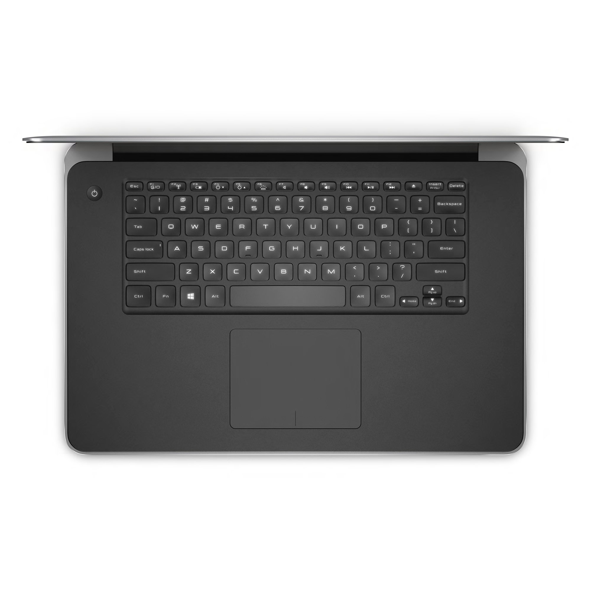
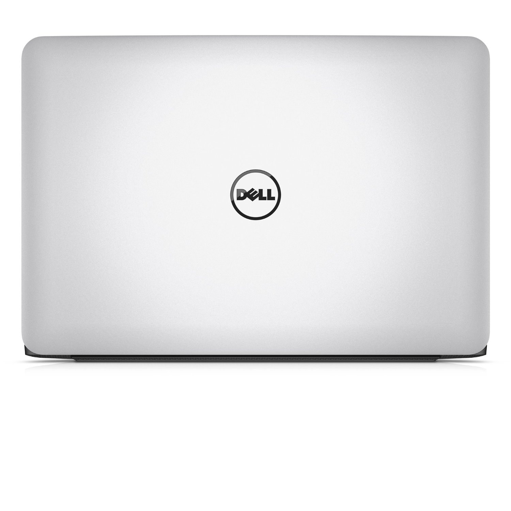
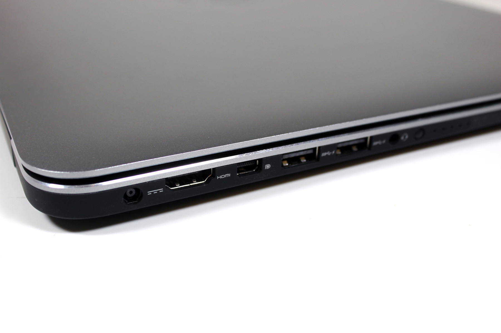

Work / Dell XPS 15,and Dell Precision M3800 Work 2013
Dell · 2013
Dell XPS 15,and Dell Precision M3800 Work 2013

Work / Dell XPS 15,and Dell Precision M3800 Work 2013
Dell · 2013
Dell XPS 15, XPS 15 Touch and Dell Precision M3800 Workstation
Project Leader for this 15.6" ultrabook. A culmination in premium finishes for the ultimate notebook experience. Carbon fiber base makes for a super light 4.5lb notebook. Silicon palm rest with a super silky feel. Forged and CNC'd display back with a QHD high resolution screen protected with Gorilla Glass.


